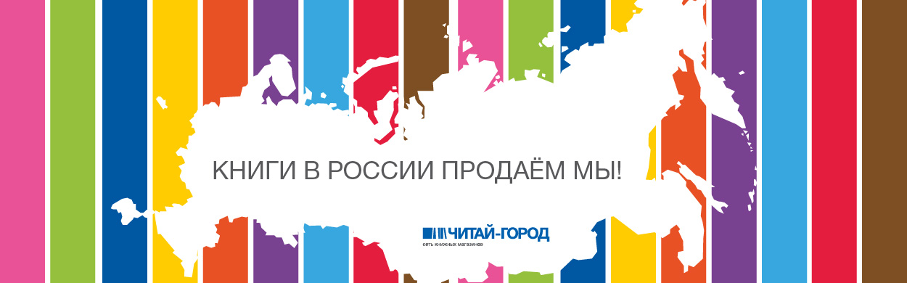

О компании
«Читай-город» – сеть современных универсальных книжных магазинов, успешно работающих по всей России. Магазины «Читай-город» входят в одно из самых крупных книготорговых объединений нашей страны – розничную сеть «Читай-город - Буквоед».
Цели
Наша главная цель – стать для посетителей не просто хорошим книжным магазином европейского уровня, но и добрым внимательным другом.
Мы верим: книги действительно могут изменить жизнь к лучшему. Поэтому мы предоставляем посетителям максимум информации по всем отраслям знаний и помогаем им настроиться на позитивный лад. Ежедневно к нам приходят миллионы людей, для которых чтение – жизненная потребность, важное условие личностного роста.
Для нас важно, чтобы посетители проводили время в магазинах с максимальной пользой и получали то, что им необходимо для досуга и самовыражения.
Поэтому кроме книг мы предлагаем:
- Широкий выбор канцелярских товаров, медиа-продукции и smart-сувениров, товаров для хобби и творчества;
- Продукцию с уникальным дизайном;
- Специальный ассортимент для профессиональных художников и декораторов;
- Оригинальные сладости.
Наши магазины
Мы заботимся об удобстве наших посетителей. Все магазины сети расположены рядом со станциями метро, на центральных городских улицах, в крупных торговых центрах
Мы обеспечиваем единые стандарты качества для магазинов по всей стране. Покупатели знают, что придя в любой «Читай-город», они найдут:
- Широкий, постоянно обновляемый ассортимент;
- Комфортные условия;
- Удобную систему навигации;
- Высокий уровень обслуживания;
- Интересные акции.
Наши партнеры
В работе с поставщиками мы не делим издательства на «большие» и «маленькие». Это позволяет в каждом магазине сформировать уникальный ассортимент книг по самым разным отраслям знаний. В числе наших надежных партнеров издательства «Эксмо», «АСТ», «Азбука», «Олма-Пресс», «Росмэн», «Питер», «Эгмонт», «Дрофа», «Центрполиграф» и многие другие.
Работая с девелоперскими компаниями, мы выстраиваем долгосрочные доверительные отношения. Фундаментом для них служат честность и взаимовыгодность. Мы уже много лет сотрудничаем с такими компаниями как: Холдинг «Капиталл Групп», «RTM», ООО «Рим Девелопмент» (г.Саратов), «Cushman&Wakefield/ Stiles&Riabokobylko», «Penny lane Realty», «Ross Group JSC».
Открывая новые магазины в регионах, мы активно участвуем в жизни каждого города: устраиваем благотворительные акции, помогаем в организации общегородских мероприятий. У нас добрые партнерские отношения с городскими властями в каждом регионе, где представлены наши магазины.
Наши мероприятия
Наши посетители – целеустремленные и увлеченные люди с активной жизненной позицией. Мы разделяем их интересы и поддерживаем единомышленников. «Читай-город» – это не только место для покупки книг, но и современная коммуникативная площадка, культурный центр, в котором проходят презентации с участием известных авторов и медиаперсон, фестивали для детей и взрослых.
Мы предлагаем покупателям новые возможности для саморазвития, обучения и развлечения. Участие в тренингах, творческих семинарах и мастер-классах в наших магазинах стало доброй традицией для жителей столицы и регионов России.